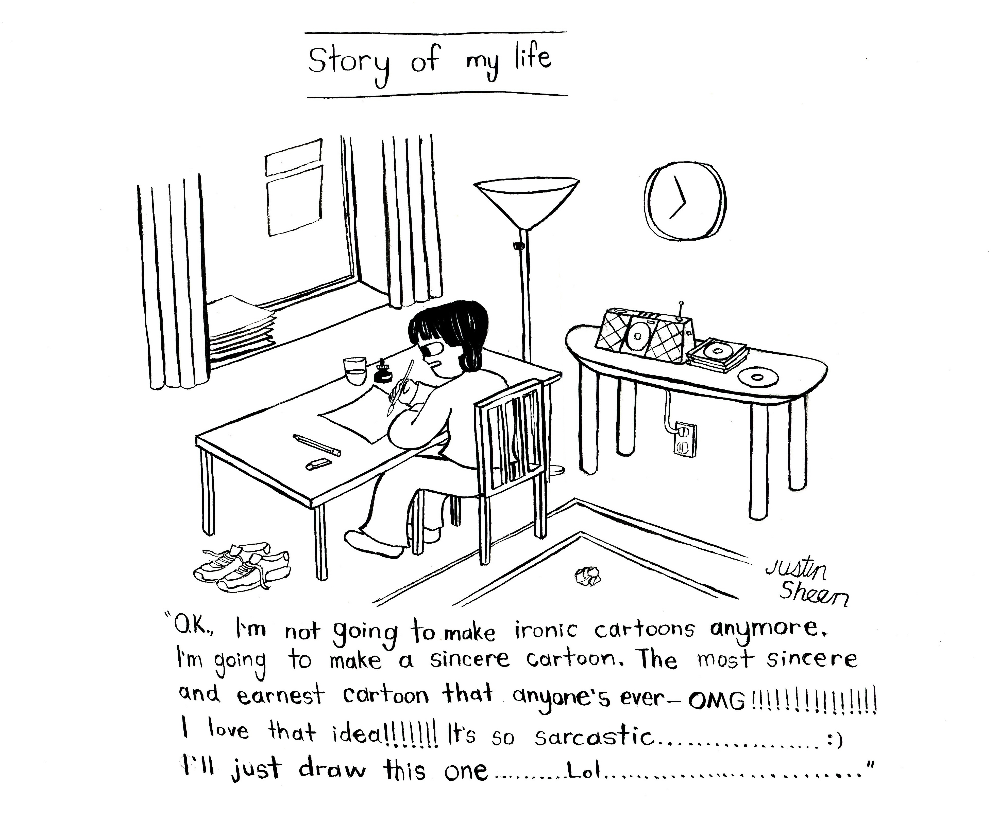

Salad
I mean I make work for other creatives
Like someone I know
If this and yes
https://bsky.app/profile/oldfriend99.bsky.social
"There's nothing worse than art that lives up to its ideals"
Cartoons are the thing that give life the most color
https://www.ubu.com/sound/landers.html
https://www.ubu.com/sound/mccollum.html
Rachel Aviv https://www.newyorker.com/magazine/2020/04/06/the-unravelling-of-a-dancer
Hannah Dreier https://www.hannahdreier.com/us-reporting
https://www.youtube.com/watch?v=awCaId8AM_M&list=RDawCaId8AM_M&start_radio=1
Beck
magpie
Nilsson Schmilsson
Surfin' U.S.A.
The ideal would be to get to the point of totally not submitting at all, to exist completely thinking of the cartoons. Then you scale it back ever so slightly to just slightly submit only the best
Certain people you meet in life, and you're just happy they exist. You can have a happy day just because they exist somewhere in the whole wide world
https://www.newyorker.com/magazine/2024/07/29/my-great-grandmother-olympic-golfer
https://www.theparisreview.org/blog/2025/08/05/my-college-diary/
Han Kang https://www.youtube.com/watch?v=XBzGRTr6ZEs
New York Sketches by E.B. White
Most writing is mediocre. But every once in a while, right when you're about to give it all up, you read a piece that changes your life
Everyone needs to read the comic adaptation of "The Hymn of the Pearl" in the Drawn and Quarterly 25th anniversary book
If the eccentricity is true it's effortless
Marion Ettlinger www.gettyimages.com/detail/news-photo/writer-susan-choi-news-photo/533536400?adppopup=true
Helen Levitt https://www.moma.org/collection/works/46165?artist_id=3520&page=1&sov_referrer=artist
I never liked Saul Steinberg
"A sensitive and honest-minded man, if he’s concerned about evil and injustice in the world, will naturally begin his campaign against them by eliminating them at their nearest source: his own person. This task will take his entire life."
hihihihihihihihihihihihihihihihihihi
https://www.poetryfoundation.org/featured-blogger/63932/richard-princes-latest-act-of-appropriation-the-catcher-in-the-rye
The Drawing Center in New York City
The artist Susan Bee
https://www.youtube.com/watch?v=iKJZZgSC_lE
https://archive.org/details/whyigotomoviesal0000prin/page/2/mode/2up
https://freshairarchive.org/guests/henny-youngman